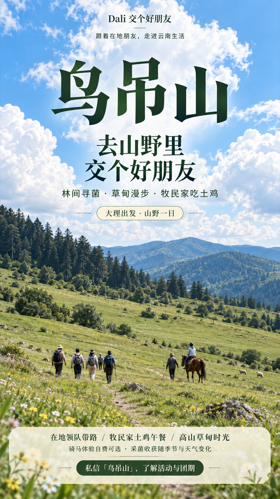
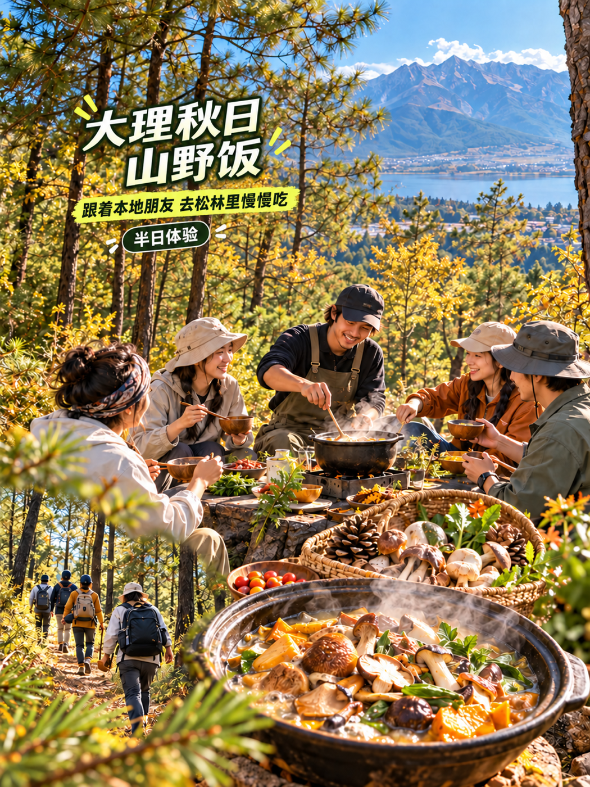
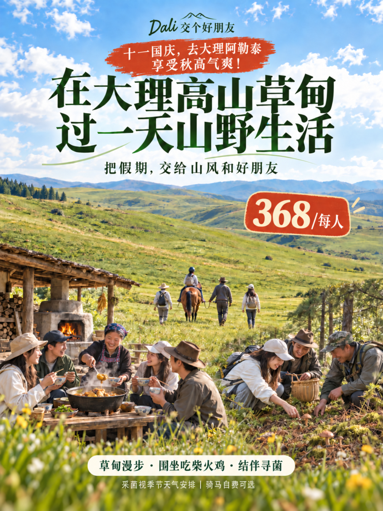

LOCAL CONNECTOR · YUNNAN
不只看见云南
走进云南生活
跟着真正生活在这里的人，去山野、村落、厨房和手作坊里，交个朋友，也带走一段属于自己的云南记忆。
- 小众在地
- 深度参与
- 朋友式连接

把假期，交给山风和好朋友。
01 / 我们是谁
我们不是带你打卡，
而是为你打开一扇门。
Dali 交个好朋友，是扎根云南的在地小众特色文旅活动平台。我们把当地真实的人、手艺、风物与生活方式，转化成可以亲身参与的深度体验。
每一次出发，都有一位 L.C（Local Connector，在地引路者）连接人与地方。你不是被安排的游客，而是被认真招待的新朋友。
02 / 体验什么
从你喜欢的云南开始
活动会随季节、天气与在地生活自然变化。这里展示的是体验方向，具体团期、价格和适合人群请以当期书面确认为准。
01 · 山野
自然户外
跟着熟悉山路的人，走草甸、认植物、看云起，在自然里慢下来。

02 · 风味
在地美食
从市集、田野到饭桌，认识食物背后的季节、手艺和生活。

03 · 文化
民俗与手作
走进村落和手作坊，听真实的故事，也亲手完成一件有温度的作品。
亲子成长自然观察村落做客节庆共度小团定制
03 / 怎么参与
先聊聊你想要的，
再决定去哪里。
好体验不是塞满行程，而是找到与你当下状态真正匹配的那一种。
- 01
告诉我们你的期待
日期、人数、同行成员，以及你更想靠近自然、文化还是具体的人。
- 02
确认当期真实条件
我们核对团期、天气、体力要求、费用边界与安全注意事项。
- 03
跟着 L.C 出发
带着好奇来，把剩下的交给在地生活和现场相遇。
04 / 开始一段对话
生成你的
咨询小纸条
选择关键信息，我们会整理成一段可复制的咨询内容。之后可前往你熟悉的官方渠道发送给「Dali 交个好朋友」。